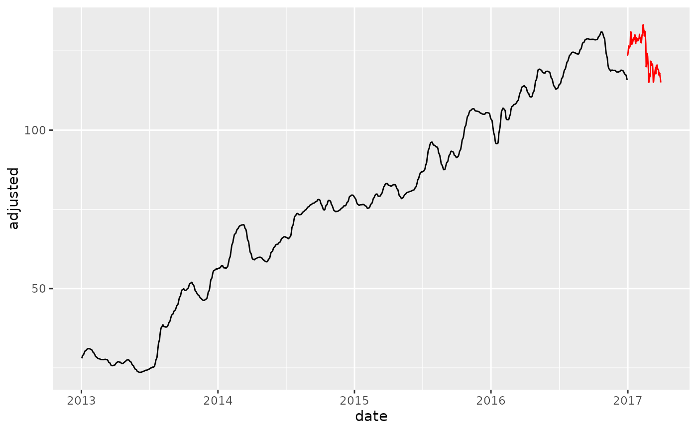

step_smooth creates a a specification of a recipe
step that will apply local polynomial regression
to one or more a Numeric column(s). The effect is smoothing the time series
similar to a moving average without creating missing values or using partial smoothing.
Arguments
- recipe
A recipe object. The step will be added to the sequence of operations for this recipe.
- ...
One or more numeric columns to be smoothed. See
recipes::selections()for more details. For thetidymethod, these are not currently used.- period
The number of periods to include in the local smoothing. Similar to window size for a moving average. See details for an explanation
periodvsspanspecification.- span
The span is a percentage of data to be included in the smoothing window. Period is preferred for shorter windows to fix the window size. See details for an explanation
periodvsspanspecification.- degree
The degree of the polynomials to be used. Set to 2 by default for 2nd order polynomial.
- names
An optional character string that is the same length of the number of terms selected by
terms. These will be the names of the new columns created by the step.If
NULL, existing columns are transformed.If not
NULL, new columns will be created.
- role
For model terms created by this step, what analysis role should they be assigned?. By default, the function assumes that the new variable columns created by the original variables will be used as predictors in a model.
- trained
A logical to indicate if the quantities for preprocessing have been estimated.
- columns
A character string of variables that will be used as inputs. This field is a placeholder and will be populated once
recipes::prep()is used.- skip
A logical. Should the step be skipped when the recipe is baked by bake.recipe()? While all operations are baked when prep.recipe() is run, some operations may not be able to be conducted on new data (e.g. processing the outcome variable(s)). Care should be taken when using skip = TRUE as it may affect the computations for subsequent operations.
- id
A character string that is unique to this step to identify it.
- x
A
step_smoothobject.
Value
For step_smooth, an updated version of recipe with
the new step added to the sequence of existing steps (if any).
For the tidy method, a tibble with columns terms
(the selectors or variables selected), value (the feature
names).
Details
Smoother Algorithm
This function is a recipe specification that wraps the stats::loess()
with a modification to set a fixed period rather than a percentage of
data points via a span.
Why Period vs Span?
The period is fixed whereas the span changes as the number of observations change.
When to use Period?
The effect of using a period is similar to a Moving Average where the Window Size
is the Fixed Period. This helps when you are trying to smooth local trends.
If you want a 30-day moving average, specify period = 30.
When to use Span?
Span is easier to specify when you want a Long-Term Trendline where the
window size is unknown. You can specify span = 0.75 to locally regress
using a window of 75% of the data.
Warning - Using Span with New Data When using span on New Data, the number of observations is likely different than what you trained with. This means the trendline / smoother can be vastly different than the smoother you trained with.
Solution to Span with New Data
Don't use span. Rather, use period to fix the window size.
This ensures that new data includes the same number of observations in the local
polynomial regression (loess) as the training data.
See also
Time Series Analysis:
Engineered Features:
step_timeseries_signature(),step_holiday_signature(),step_fourier()Diffs & Lags
step_diff(),recipes::step_lag()Smoothing:
step_slidify(),step_smooth()Variance Reduction:
step_box_cox()Imputation:
step_ts_impute(),step_ts_clean()Padding:
step_ts_pad()
Main Recipe Functions:
Examples
library(recipes)
library(tidyverse)
library(tidyquant)
library(timetk)
# Training Data
FB_tbl <- FANG %>%
filter(symbol == "FB") %>%
select(symbol, date, adjusted)
# New Data - Make some fake new data next 90 time stamps
new_data <- FB_tbl %>%
tail(90) %>%
mutate(date = date %>% tk_make_future_timeseries(length_out = 90))
# ---- PERIOD ----
# Create a recipe object with a step_smooth()
rec_smooth_period <- recipe(adjusted ~ ., data = FB_tbl) %>%
step_smooth(adjusted, period = 30)
# Bake the recipe object - Applies the Loess Transformation
training_data_baked <- bake(prep(rec_smooth_period), FB_tbl)
# "Period" Effect on New Data
new_data_baked <- bake(prep(rec_smooth_period), new_data)
# Smoother's fit on new data is very similar because
# 30 days are used in the new data regardless of the new data being 90 days
training_data_baked %>%
ggplot(aes(date, adjusted)) +
geom_line() +
geom_line(color = "red", data = new_data_baked)
# ---- SPAN ----
# Create a recipe object with a step_smooth
rec_smooth_span <- recipe(adjusted ~ ., data = FB_tbl) %>%
step_smooth(adjusted, span = 0.03)
# Bake the recipe object - Applies the Loess Transformation
training_data_baked <- bake(prep(rec_smooth_span), FB_tbl)
# "Period" Effect on New Data
new_data_baked <- bake(prep(rec_smooth_span), new_data)
#> Warning: span too small. fewer data values than degrees of freedom.
#> Warning: pseudoinverse used at 0.555
#> Warning: neighborhood radius 1.445
#> Warning: reciprocal condition number 0
#> Warning: There are other near singularities as well. 2.088
# Smoother's fit is not the same using span because new data is only 90 days
# and 0.03 x 90 = 2.7 days
training_data_baked %>%
ggplot(aes(date, adjusted)) +
geom_line() +
geom_line(color = "red", data = new_data_baked)

# ---- NEW COLUMNS ----
# Use the `names` argument to create new columns instead of overwriting existing
rec_smooth_names <- recipe(adjusted ~ ., data = FB_tbl) %>%
step_smooth(adjusted, period = 30, names = "adjusted_smooth_30") %>%
step_smooth(adjusted, period = 180, names = "adjusted_smooth_180") %>%
step_smooth(adjusted, span = 0.75, names = "long_term_trend")
bake(prep(rec_smooth_names), FB_tbl) %>%
ggplot(aes(date, adjusted)) +
geom_line(alpha = 0.5) +
geom_line(aes(y = adjusted_smooth_30), color = "red", size = 1) +
geom_line(aes(y = adjusted_smooth_180), color = "blue", size = 1) +
geom_line(aes(y = long_term_trend), color = "orange", size = 1)